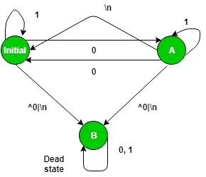

Lex is a computer program that generates lexical analyzers, which is commonly used with the YACC parser generator. Lex, originally written by Mike Lesk and Eric Schmidt and described in 1975,is the standard lexical analyzer generator on many Unix systems, and an equivalent tool is specified as part of the POSIX standard. Lex reads an input stream specifying the lexical analyzer and outputs source code implementing the lexer in the C programming language.
Deterministic Finite Acceptor –
In the theory of computation, a branch of theoretical computer science, a deterministic finite automaton (DFA)— also known as a deterministic finite acceptor (DFA) and a deterministic finite state machine (DFSM)— is a finite-state machine that accepts and rejects strings of symbols and only produces a unique computation (or run) of the automaton for each input string. Deterministic refers to the uniqueness of the computation. In search of the simplest models to capture finite-state machines, McCulloch and Pitts were among the first researchers to introduce a concept similar to finite automata in 1943.
Approach –

LEX provides us with an INITIAL state by default. So in order to make a DFA, use this initial state as the initial state of the DFA. Define two more states A and B where B is the dead state that would be use if encounter a wrong or invalid input. When user get input which is an invalid input, move to state B and print message “INVALID” and if user reaches INITIAL state from state A with a “\n” then display a message “Not Accepted”. But if user get a \n on the initial state, user display a message “Accepted”.
Examples –
Input : 1001 Output : Accepted Input : hjabdba Output : INVALID
To implement the above DFA, user needs to write the below code in a lex file with a .l extention.
NOTE :
To compile a lex program, user need a UNIX system and flex which can be installed using sudo apt-get install flex
With all the above specification open unix terminal and do the following:
1. Use the lex program to change the specification file into a C language program. The resulting program is in the lex.yy.c file.
2. Use the cc command with the -ll flag to compile and link the program with a library of lex subroutines. The resulting executable program is in the a.out file.lex lextest cc lex.yy.c -lfl
Code –
%{
%}
%s A B
%%
<INITIAL>1 BEGIN INITIAL;
<INITIAL>0 BEGIN A;
<INITIAL>[^0|\n] BEGIN B;
<INITIAL>\n BEGIN INITIAL; printf("Accepted\n");
<A>1 BEGIN A;
<A>0 BEGIN INITIAL;
<A>[^0|\n] BEGIN B;
<A>\n BEGIN INITIAL; printf("Not Accepted\n");
<B>0 BEGIN B;
<B>1 BEGIN B;
<B>[^0|\n] BEGIN B;
<B>\n {BEGIN INITIAL; printf("INVALID\n");}
%%
void main()
{
yylex();
}
Output –
nickhil@NICKHIL:~$ lex prpg11.l nickhil@NICKHIL:~$ cc lex.yy.c -lfl nickhil@NICKHIL:~$ ./a.out 1000 Not Accepted hello INVALID 01010101 Accepted